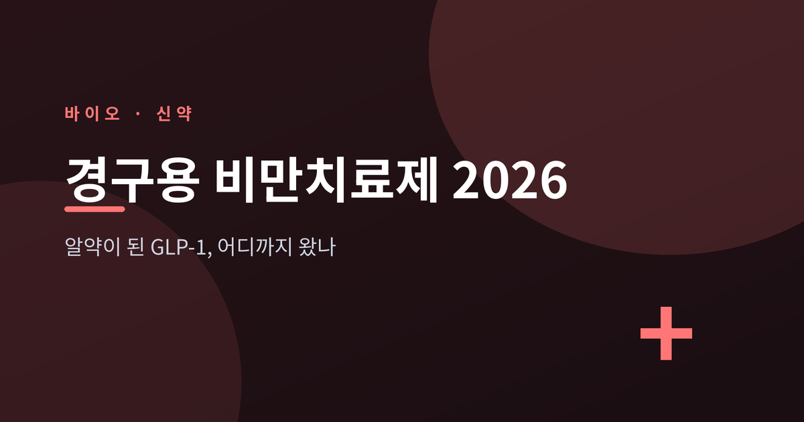
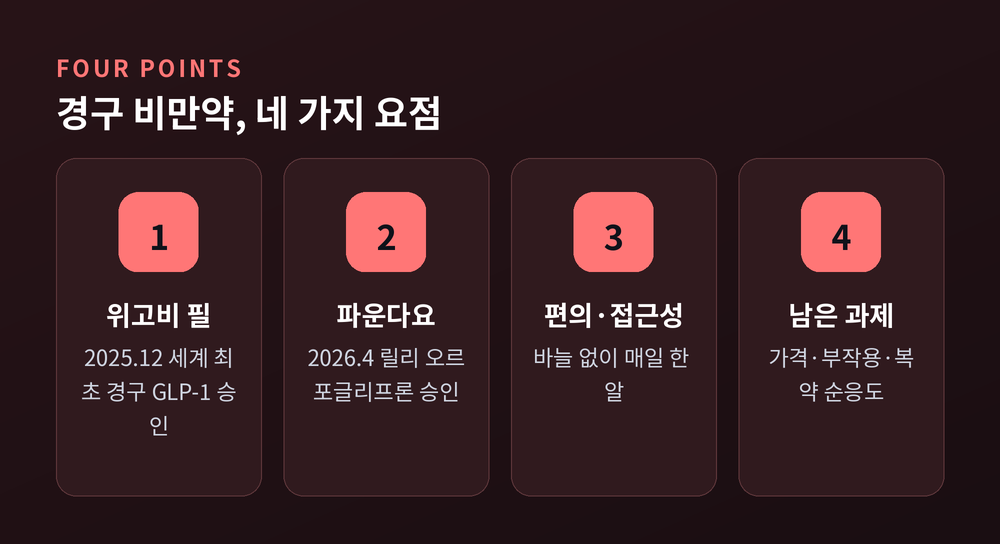
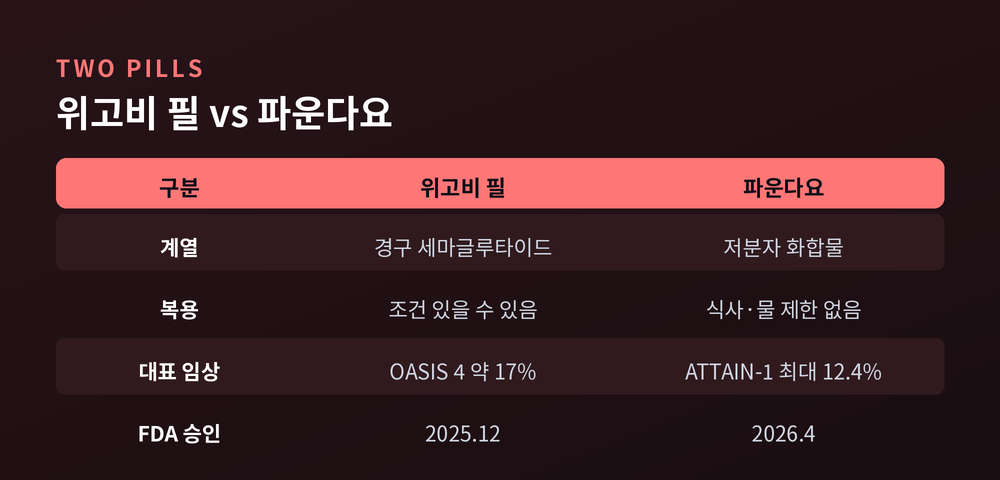
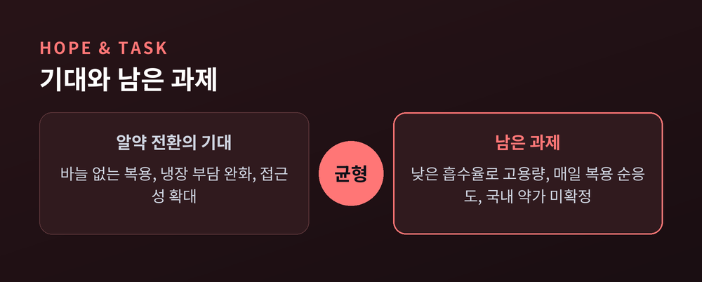

알약이 된 GLP-1, 어디까지 왔나

이번 글에서는 2026년 들어 본격화된 경구용 비만치료제 흐름을 정리해 보겠습니다. 주사로만 맞던 GLP-1이 알약으로 바뀌면서 무엇이 달라졌는지, 위고비 필과 오르포글리프론을 중심으로 살펴봅니다. 효과만이 아니라 부작용과 비용, 접근성까지 함께 짚겠습니다.

GLP-1은 원래 제2형 당뇨병 치료제로 개발된 물질입니다.
그중 일부 약물이 비만 치료용으로 승인되며 주목받기 시작했습니다.
작용 방식은 크게 두 갈래입니다. 뇌에서는 식욕을 조절하는 영역을 자극해 배고픔을 줄입니다. 소화기에서는 위 배출을 늦춰 포만감을 오래 유지하고, 인슐린 분비를 도와 혈당을 조절합니다.
정리하면 "식욕 억제 + 포만감 연장 + 혈당·대사 개선"의 복합 작용입니다.
예전에는 위고비나 젭바운드처럼 주 1회 피하주사가 기본이었습니다.
지금은 매일 한 알 먹는 경구제가 현실이 되었습니다.
가장 큰 변화는 바늘에 대한 거부감이 사라진다는 점입니다. 냉장 유통 부담도 상대적으로 적어, 대량 생산과 보급에 유리합니다.
다만 알약에는 분명한 한계도 있습니다.
경구제는 소화기를 거치며 약물이 분해돼 흡수율이 낮습니다. 그래서 주사보다 높은 용량이 필요합니다.
복용 책임도 환자에게 더 무겁게 옮겨옵니다. 주사는 주 1회였지만, 알약은 매일 거르지 않고 챙겨야 하기 때문입니다.
FDA는 2025년 12월 22일 위고비 경구제(1일 1회 경구 세마글루타이드 25mg)를 승인했습니다.
체중관리용으로는 세계 최초의 경구 GLP-1 수용체 작용제입니다.
용량은 1.5mg, 4mg, 9mg, 25mg 네 가지로 나뉩니다. OASIS 4 임상 3상에서는 저칼로리 식단·운동을 병행한 복용군이 평균 약 17% 체중을 줄였습니다(위약군 약 3%).
가장 흔한 이상반응은 메스꺼움과 구토, 설사였습니다. 처방정보에는 갑상선 C세포 종양 위험과 관련한 박스 경고가 포함되어 있습니다.
미국에서는 2026년 1월 초 출시되었습니다. 미국 기준 자비 부담은 시작 용량(1.5mg) 월 약 149달러부터이며, 고용량(9·25mg)은 월 약 299달러 수준입니다.
특히 메디케어는 2026년 7월 1일부터 'GLP-1 브리지 프로그램'으로 경구 위고비를 커버할 예정입니다. 그간 비만약을 제외해온 정책의 전환점으로 평가됩니다.
FDA는 2026년 4월 1일 릴리의 경구 GLP-1 오르포글리프론을 '파운다요(Foundayo)' 브랜드로 승인했습니다.
이 약은 펩타이드가 아닌 저분자 화합물입니다. 덕분에 식사나 물 제한 없이 하루 중 아무 때나 복용할 수 있는 유일한 체중감량용 GLP-1 알약이라는 점이 특징입니다.
저분자라 대량 생산과 공급 확장에도 유리합니다.
ATTAIN-1 임상 3상(72주)에서는 저·중·고용량군이 각각 평균 7.8%, 9.3%, 12.4% 체중을 줄였습니다(위약군 2.1%).
부작용은 다른 GLP-1과 비슷한 경증~중등도 소화기 증상이었습니다. 메스꺼움은 용량별로 28.9~35.9%(위약 10.4%), 변비는 21.7~29.8%로 보고됐습니다.
미국 기준으로 상업보험 가입자는 절약카드로 월 25달러, 자비 환자는 최저 용량 월 약 149달러부터 이용할 수 있습니다.

| 구분 | 위고비 필 | 파운다요(오르포글리프론) |
|---|---|---|
| 계열 | 펩타이드(경구 세마글루타이드) | 저분자 화합물 |
| 복용 조건 | 복용 조건 있을 수 있음 | 식사·물 제한 없음, 아무 때나 |
| 용량 | 1.5/4/9/25mg | 저·중·고용량 |
| 대표 임상 | OASIS 4: 약 17% 감량 | ATTAIN-1(72주): 최대 약 12.4% 감량 |
| FDA 승인 | 2025년 12월 | 2026년 4월 |
※ 위 두 수치는 시험 설계·대상·기간이 서로 달라 직접 비교할 수 없습니다. 동일 조건의 head-to-head 데이터가 아닙니다.
2026년 미국당뇨병학회(ADA)에서는 'GLP-1 이후'의 경쟁이 모습을 드러냈습니다.
핵심은 아밀린이라는 새로운 경로입니다.
노보노디스크의 카그리세마는 GLP-1과 아밀린 유사체를 결합한 주 1회 복합제로, FDA 결정은 2026년 10월경 예상됩니다. 국내 움직임도 있습니다. 한미약품은 저분자 경구 비만치료제 'HM101460'을 공개하고 비임상 단계를 진행 중입니다. 디앤디파마텍은 식사 여부와 무관하게 복용 가능한 경구 비만약 플랫폼으로 미국 멧세라에 대규모 기술 수출을 성사시켰습니다.
다만 이들 대부분은 아직 임상 단계입니다. 결과를 더 지켜봐야 할 시점입니다.

알약은 분명 문턱을 낮췄습니다. 바늘 없이, 더 넓은 사람에게 닿을 길이 열렸습니다.
그러나 풀어야 할 숙제도 남아 있습니다. 매일 복용해야 하는 부담, 소화기 부작용, 그리고 비용 문제입니다.
여기서 한 가지는 분명히 짚고 싶습니다. 위 가격과 승인 정보는 모두 미국 기준입니다. 국내 출시나 약가, 건강보험 급여 적용은 아직 확정되지 않았습니다.
또한 약의 효과 수치는 임상시험 조건에 따라 달라집니다. 개인별 결과는 다를 수 있으며, 복용 여부는 반드시 전문의와 상담해 결정하시길 권합니다.
정리하면 이렇습니다.
알약은 GLP-1 비만치료의 진입 장벽을 낮춘 의미 있는 진전입니다. 하지만 "알약이 곧 더 강한 효과"를 뜻하지는 않습니다.
— 편리해졌다는 것과 충분해졌다는 것은 다른 문제입니다.
여러분의 선택지가 하나 더 늘어난 지금, 더 중요해진 것은 정확한 정보와 전문가의 판단이 아닐까 합니다.